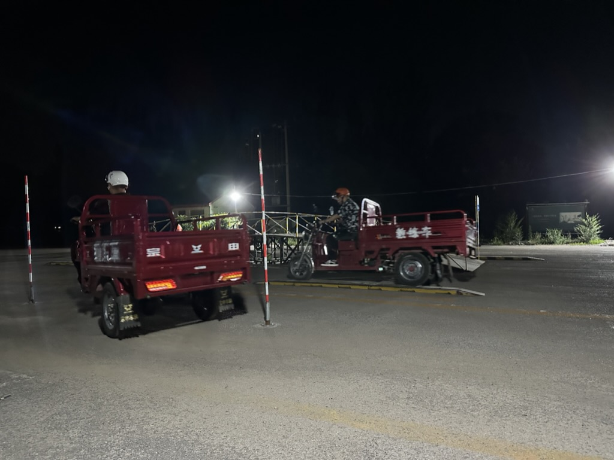
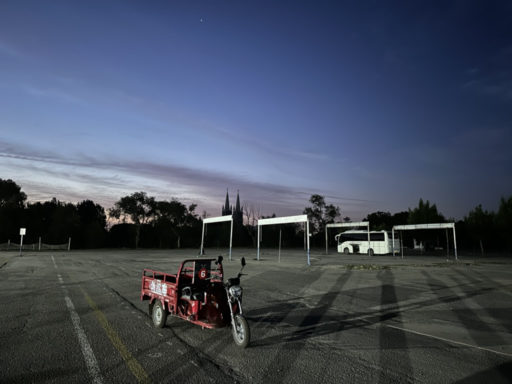
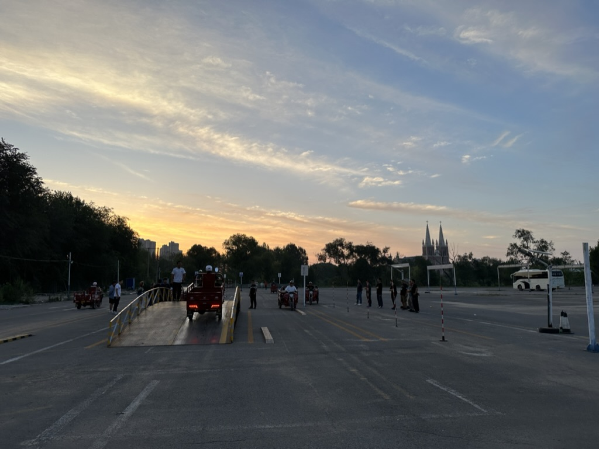
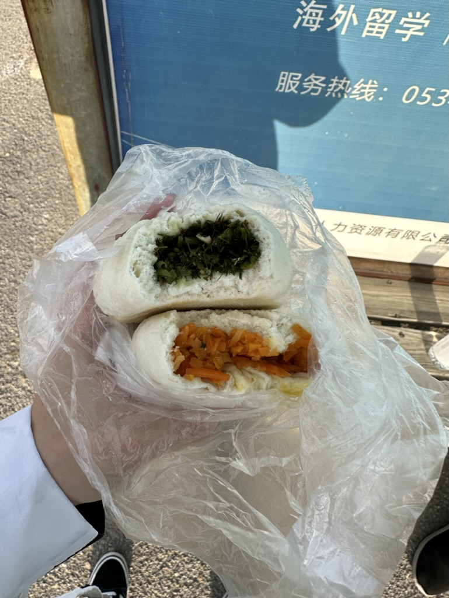
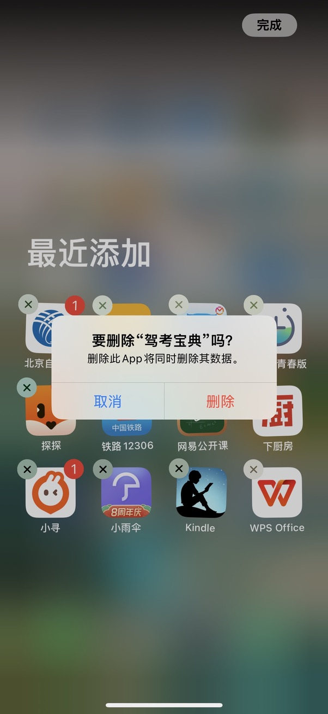
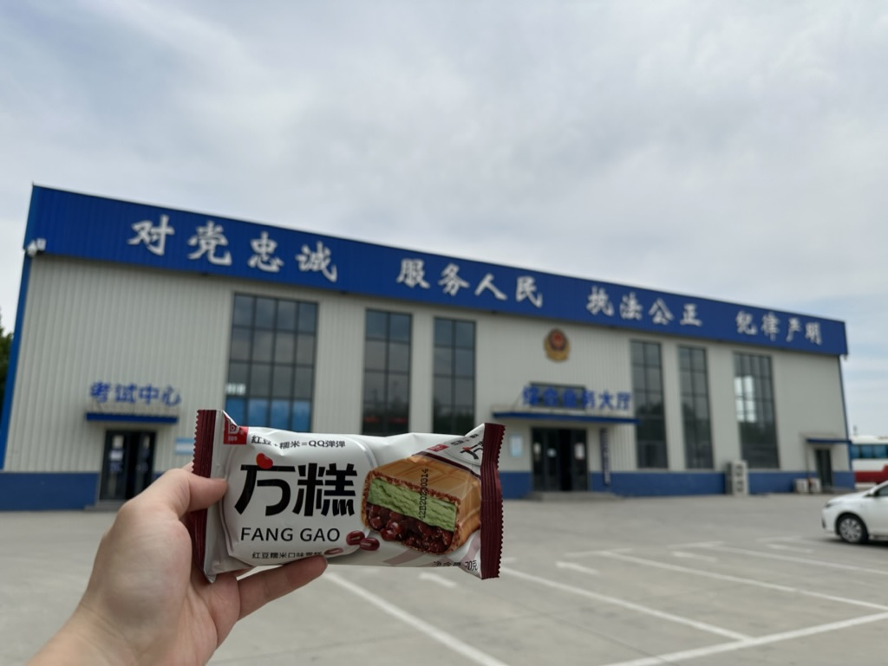
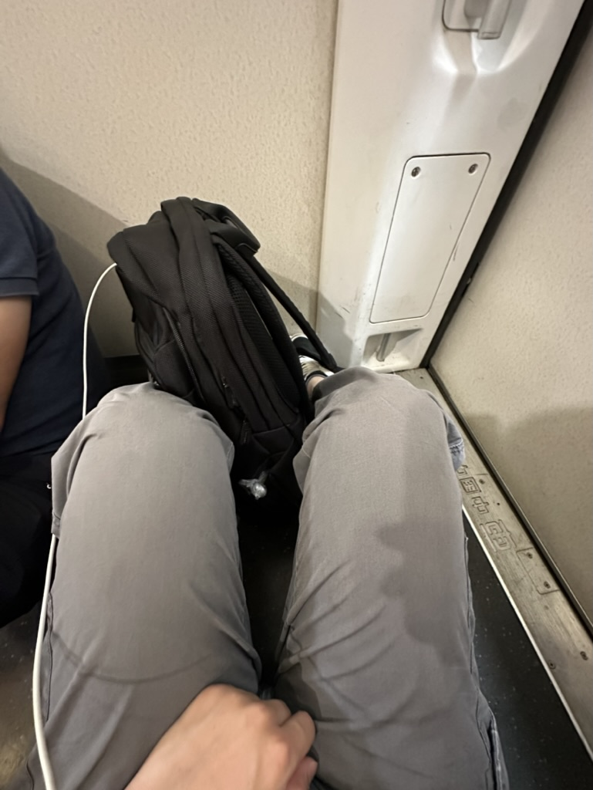

flag 就像个咒语，立了基本都会反向达成。比如：今年我一定要减5斤，现在已经涨了5斤。
6月12日的时候，我写了一篇流水账，当时立了个 flag 说要在一天之内考下摩托车驾照，但第二天在科目二考试中挂了，拖着狼狈的身体在回家的高铁上，又写了篇流水账记录当时丧气、失望的心情。
前一天还「男人至死是少年」的豪言壮志，第二天就成了「摩托车也不是我的必需品」的泄了气的气球。
经过那次考试失利后，我脑海中一直回荡着考试过程的景象，反复在脑子里对那次考试进行复盘，设想如果我当时怎么怎么做就不会挂了。越是想让自己不去回忆这件事，反而回忆的更多（白熊效应）。
经过了好几天都无法消化这次失败，机缘巧合在一篇知乎回答里看到有用户推荐「哈佛幸福课（积极心理学）」，我觉得应该会对我有帮助，所以开始学习这门课程。
学到一半多的时候，我挥之不去的挫败感基本被课程中的观点治愈了，尤其是那些关于失败的论点：
- 学会失败，从失败中学习，要想进步就必须学会失败。
- 要像接受我们所爱的人的失败那样去接受自己的失败。
- 失败避免不了，你要从失败中学习。
- 最成功的人往往是失败次数最多的。
- 把失败看成成长的工具，这可以更好的了解自己。
- 在成功或失败过后，会有大起大落，但我们会恢复过来，我们一生基本沿基准的幸福发展。
- ……
于是在给自己做好心理建设后，我准备二战。
上一次考试是在我休陪产假期间，我选择了周二这个工作日。考试地点一周有三天可以考试：周二、周四、周六。这一次为了不耽误工作，只能选择周六考试。我在周四报名并缴纳了补考费。周五下午5点我去吃了个驴肉火烧，打包了一个火烧准备路上吃。6点多我提前下班从公司出发，7点多到达大巴车集合地点，再次坐上去德州的大巴车。这一天是6月30日。
为了积攒一些好运，我花了99元在小宇宙购买了「谐星聊天会特别季」节目。第一次去的时候就看到这个节目，但没有购买。当时心中有个念头一闪而过：我不会因为没买而挂吧？最后果然挂了，我在复盘的时候也想过有没有可能是没买这个节目导致的😂。
认真练习
7月1日凌晨1点多到达训练地点，开始为期7小时的「特种兵」训练，因为这次我只需要补考科目二，所以可以把所有精力都放在科目二上。由于是周末，考试的人很多，每练一轮要等20多分钟，这中间我没有休息，一直练到天亮。
凌晨2点：
凌晨3点：

凌晨4点：

凌晨5点：

早上6:30又吃了一次非常难吃的包子加小米粥：

准备考试
8点左右，我们被拉到车管所办事大厅办理考试报名，由于我是补考，手续比较简单。
这一批有3个人要补考，8点半提前把我们拉到了考试地点，9点开始考试，我们几个是当天最先考试的三个人，我是第二个考试，三个人都过了。
然后就是等待科目四考试，十点半左右满分考完了科目四，至此我的摩托车考试流程结束了，所有科目都是满分。
考完试后第一件事就是卸载了「驾考宝典」APP，感谢它的陪伴😂

考完科目四后在车管所门口的小卖店买了个雪糕奖励自己：

11点多新证就下来了
这一天是7月1日，和党的生日同一天：
定了下午的高铁票回老家，看看我的大儿子，还有大女儿。
打车去高铁站的路上让出租车司机推荐了一家当地人经常买的扒鸡店，买了3只扒鸡，一只给岳父家，两只我们吃。
这一次买的是无座票，在高铁上找了个角落席地而坐，2个小时就到家了。

结语
这一次来考试，我没有再立 flag，安静的来，安静的走。
因为没有立 flag，也没有人知道我又来考试了，所以这一次的心情也不一样，没有给自己太高的预期和压力，就当是来德州旅游，体验生活，如果再挂了就找机会再来。在练习场通宵练习，看着太阳落下，月亮升起；月亮落下，太阳升起，整个过程很奇妙。
其实我通常情况下都是先把事办成再对外宣布，因为担心对外宣布后就像泄露了天机，容易遭天谴而失败，这一次属实轻敌了，以后也不会轻易再立flag。